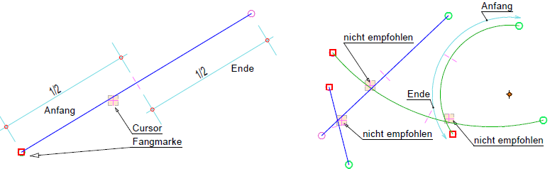
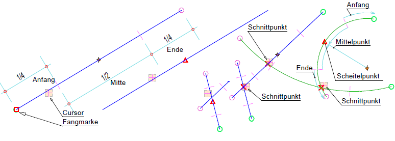
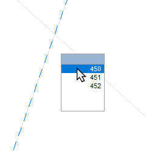
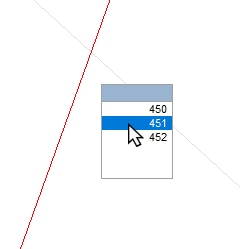
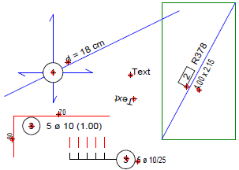
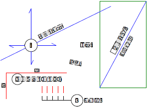

Abhängig davon, in welchem Programm Sie sich gerade befinden, werden die Elemente oder Punkte angezeigt, die beim Klicken gefangen werden. Damit können Sie vor dem Klick erkennen, ob das richtige Element für die Aktion benutzt wird.
Fangmarken-Darstellung:
Symbol |
Zeigt an |
|---|---|
Element (Linien, Kreise) |
|
Text |
|
Anfangs- und Endpunkte (Linien, Teilkreise) |
|
Mittelpunkt (Linien), Scheitelpunkt (Teilkreise) |
|
Mittelpunkt (Kreise, Teilkreise), Hilfspunkte |
|
Schnittpunkte (Linien, Kreise) |
|
Eckpunkte (Füllungen) |
|
Anmerkung: |
|
Wenn Elemente nicht gefangen werden, prüfen Sie im Elemente-Filter, ob diese Elementgruppe vom Elementfang ausgeschlossen ist. |

|
Tipp: |
|
In den Systemdaten können Sie die Größe der Fangmarke einstellen. [Optionen | Systemdaten | Konstruktionsprogramm | Fangmarke → Größe Fangmarke (Bildpunkte)]. |

Linien- und Kreispunkte fangen
Es gibt zwei Möglichkeiten Linien- und Kreispunkte zu fangen:
Einfacher Modus
Bei dieser Einstellung gibt es nur Anfangs- und Endpunkte von Linien und Teilkreisen und keine Schnitt- und Mittelpunkte.
 |
§Bewegen Sie den Cursor über einer Linie oder einem Teilkreis.
Befindet sich der Cursor in der Nähe des Anfangs- oder Endpunktes, wird die Fangmarke entsprechend ihrer Position gesetzt.
Wenn mehrere Elemente übereinanderliegen, wird die Funktion Auswahlfenster mit Elementnummer aufgerufen, mit welcher Sie das gewünschte Element selektieren können. Zusätzlich werden Schnittpunkte zwischen Linien und Kreisen/Teilkreisen erkannt.
Erweiterter Modus
Diesen Modus können Sie unter [Option | Einste → Erweitertes Fangen ausschalten] ein- oder ausschalten.
Bei dieser Einstellung können Anfangs-, End- oder Mittelpunkte einer Linie oder Anfangs-, End-, Mittel- oder Scheitelpunkte eines Teilkreises gefangen werden. Bei Vollkreisen wird nur der Mittelpunkt gefangen.
 |
§Bewegen Sie den Cursor über einer Linie oder einem Teilkreis.
Befindet sich der Cursor in der Nähe des Anfangs- oder Endpunktes, wird die Fangmarke entsprechend ihrer Position gesetzt. Bei Schnittpunkten von Linien und Kreisen muss der Cursor auf dem Schnittpunkt liegen. Wenn im Fangbereich ein Hilfspunkt liegt, wird dieser vorrangig markiert.
|
Tipp: |
|
Mit der Funktion [HilfPu] können Hilfspunkte entlang von Linien-, Polygonzügen, Kreisen und Texten platziert werden. Weitere Möglichkeiten zum Platzieren von Hilfspunkten finden Sie hier: Erweiterte Hilfspunkt-Palette |
Elementkennung
Wenn Sie Elemente anklicken, wird je nachdem welchen Punkt einer Linie, Kreises oder Teilkreises Sie anklicken die entsprechende Kennung (A, M, E usw.) mit der dazugehörigen Elementnummer in die Eingabe geschrieben. Im Differenzmodus können Sie nach der Elementkennung einen Abstand zu einer Bezugslinie oder einem Bezugspunkt mit dem entsprechenden Vorzeichen eingeben.
Kennung |
Beschreibung |
Beispiel |
|---|---|---|
A |
Anfangspunkt |
A17 = Anfangspunkt der Linie Nr. 17 |
M |
Mittelpunkt |
M34 = Mittelpunkt der Linie Nr. 34 |
E |
Endpunkt |
E51 = Endpunkt der Linie Nr. 51 |
I |
Schnittpunkt |
I66/67 = Schnittpunkt der Linie Nr. 66 und Nr. 67 |
H |
Scheitelpunkt |
H49 = Scheitelpunkt des Teilkreises Nr. 49 |
Multifangfenster mit Elementnummer
Wenn Sie einen Punkt anklicken, der nicht eindeutig einem Zeichenelement zugewiesen werden kann, weil z. B. zwei Linien übereinanderliegen, wird ein Auswahlfenster (Multifangfenster) eingeblendet, welches die Auswahl des gewünschten Elements ermöglicht. Während das Multifangfenster geöffnet ist, werden alle Zeichenelemente in der Farbe angezeigt, die in den Systemdaten für die Darstellung von Elementen im Hintergrund ausgewählt wurde. [Option | SysDat | Farbeinstellung | Konstruktionsprogramm → Elemente im Hintergrund].
Wenn Sie den Cursor im Multifangfenster über eine Elementnummer bewegen, wird das zugehörige Zeichenelement in der Originalfarbe dargestellt. Mit einem Linksklick auf die Elementnummer können Sie das entsprechende Zeichenelement auswählen.
Multifangfenster |
|
|---|---|
 |
 |
Um das Multifangfenster, ohne Auswahl eines Elements, zu schließen, klicken Sie mit Rechtsklick in die Zeichenfläche oder drücken Sie die Esc-Taste.
Multifangfenster im Bewehrungsprogramm
Im Formstahl-Menü [Formst] wird das Multifangfenster eingeblendet, wenn die angeklickte Verlegung nicht eindeutig erkannt werden kann. Im Fenster wird jede erkannte Rundstahlposition mit einem Kürzel und der jeweiligen Positionsnummer gekennzeichnet. Handelt es sich bei mehreren Einträgen um dieselbe Position, wird zusätzlich die Gesamtzahl der Verlegungen angegeben. Mit einem Linksklick auf einen Eintrag wählen Sie die entsprechende Verlegung aus.
Im Positionierungsprogramm [Formst/Formma | Bipos] werden zusätzlich Formmattenpositionen erkannt.
Multifangfenster |
Kürzel |
Welche Position? |
Wie oft verlegt? |
|---|---|---|---|
|
R Rundstahl-Positionen |
15 |
18x |
M Formmatten-Positionen |
2 |
|

Texte fangen
Texte können am unteren Anfangspunkt oder über einen beliebigen Punkt innerhalb ihres umschließenden und nicht sichtbaren Rechtecks gefangen werden.
In den Systemdaten können Sie auswählen, wie Texte gefangen werden sollen. [Option | SysDat | Konstruktionsprogramm → Fangen von Texten über umschließendes Rechteck].
Beispiel:
 |
 |
Anklickbare Punkte |
Markierte Zeichenelemente |
Siehe auch:
·Auswählen von Zeichenelementen
·Aktivieren oder Deaktivieren des Elementfangs für bestimmte Elementgruppen